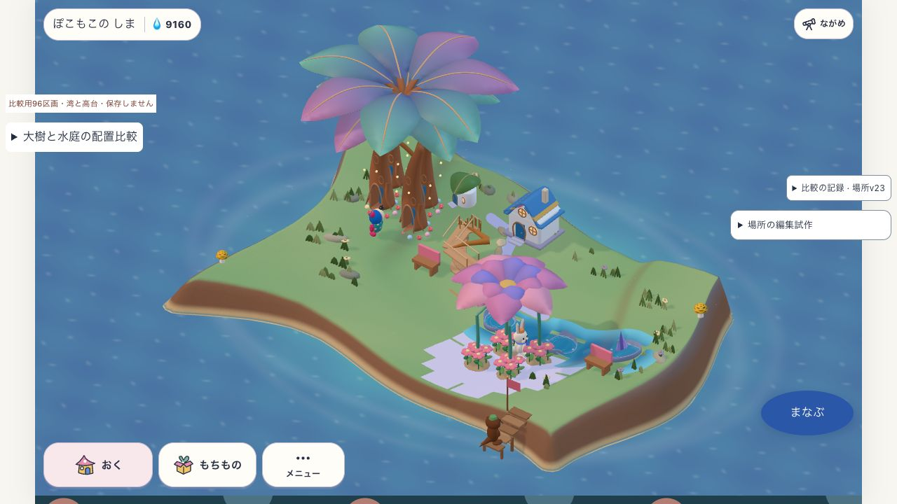
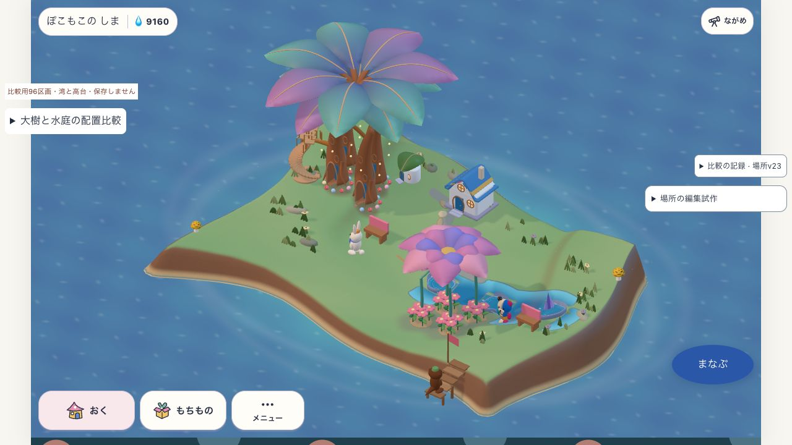
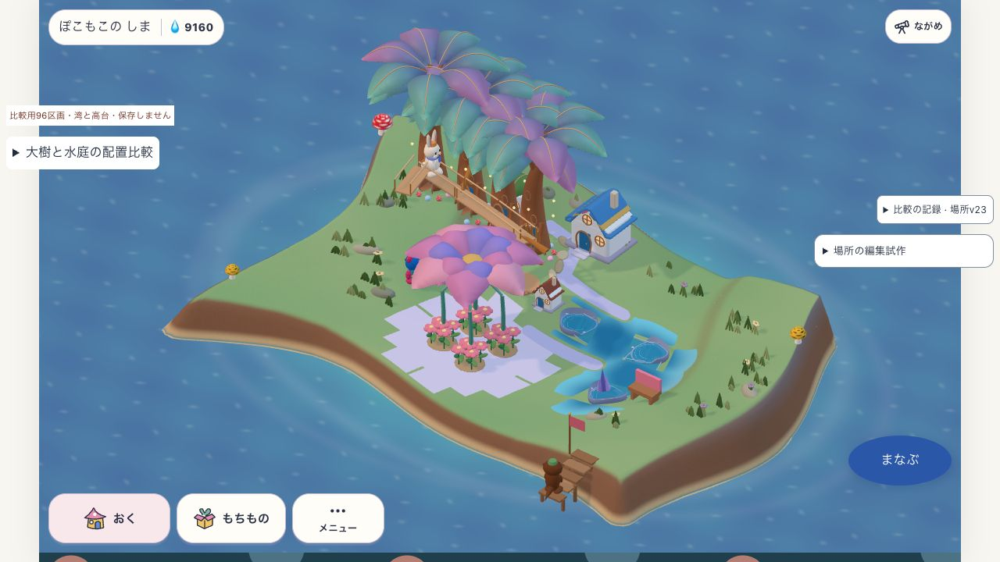
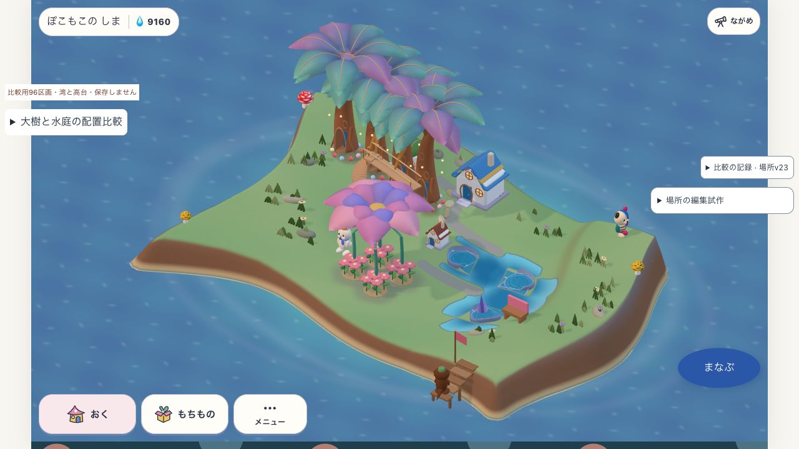

場所が地面につながるか
2026-10-24 · v27 · 成熟した同じ17所有者を使う、保存しない研究試作。同一ビルド・同一カメラで比較。
白い格子面と離れた階段は改善。完成美術はまだ未達。階段は見かけだけを動かさず、なかまが歩く実経路も木の近くへ変更した。庭・根元・岸は既存床に沿う材質表現で、歩ける床は増やしていない。
配置A

変更前：家の前に離れた階段、四角い庭面
変更後：木へ寄せた実経路、地面になじむ庭面配置B

変更前：別の並び
変更後：同じ規則で入口と庭面が追従確認できたこと・残ること
| 観点 | 判断 |
|---|
| 組み替え | A→Bは通常13操作で成功。3196ms、描画24回、最大間隔283ms。滑らかさの合格とはしない。 |
| 住人の利用 | A/Bとも変更後の回廊を新規利用。現在の場所revisionと利用記録を照合。 |
| 床と所有 | domainのA→B→Aで所有を保持。入口は木から1区画。経路と材質頂点に床支持あり。 |
| 美術 | 白い格子と階段の分離は改善。根元・岸の変化は小さい。水鉢の露出、道の帯、単調な島の側壁、大樹と家の縮尺差は残る。 |
| 未検証 | 通常育成、本人保存、全メッシュ接触、実機、子どもの理解、配布。成熟fixtureの限定検証。 |
方式判断：地形方式を捨てる根拠はない。場所の入口を所有物の位置から導く改善は有効。ただし、この小変更を重ねるだけで完成するとは判断しない。次の大きな差は水鉢・道・岸を一つの断面として組む制作検証で確認する。
契約・検証記録 · 経路・床支持テスト · 実画面の証拠一覧 · 前回の成熟比較
build SHA256: 5effcba87bd580171b792884cd63717524ab261c4cf180288767fc112199964b
native kit: 7a02fb27a0dfad8d1cb4b2700074b9de42dddb052611354176bddf4bf69f6a34
candidate: matureTrial=paired / connectionTrial=joined。製品source・通常配布への採用なし。